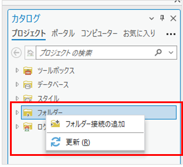
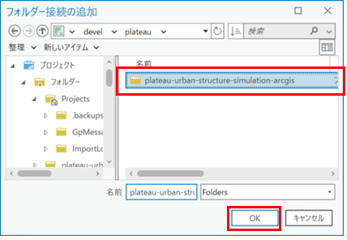
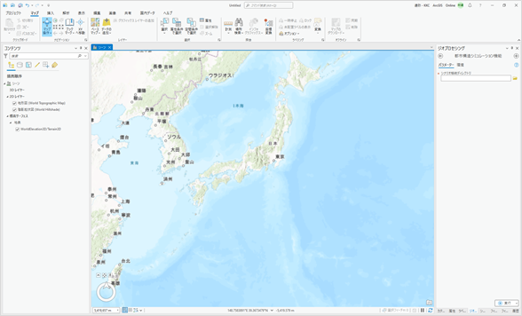

1. インストール
1.1. プログラムの配置
「plateau-urban-structure-simulation-arcgis.zip」を任意のフォルダーに配置し、解凍する。
1.2. ArcGIS Proの設定
ArcGIS Proを起動する。
画面右側の「カタログ」ウィンドウより「フォルダー」を右クリックし、「フォルダー接続の追加」を選択する。

1の工程で解凍した plateau-urban-structure-simulation-arcgis のフォルダーを選択した状態で「OK」をクリックする。

「カタログ」ウィンドウより「フォルダー」をダブルクリックした際に、上述の工程で選択したplateau-urban-structure-simulation-arcgis フォルダーが表示されていたら接続されている。

以降の説明では plateau-urban-structure-simulation-arcgis フォルダーからの相対パスを記述する。
1.3. ローカルシーンの起動
ArcGIS Proの「挿入」タブより「新しいマップ」をクリックし、「新しいローカルシーン」を選択する。
ローカルシーンを起動すると、ArcGIS Proの画面中央部にマップが表示される。
